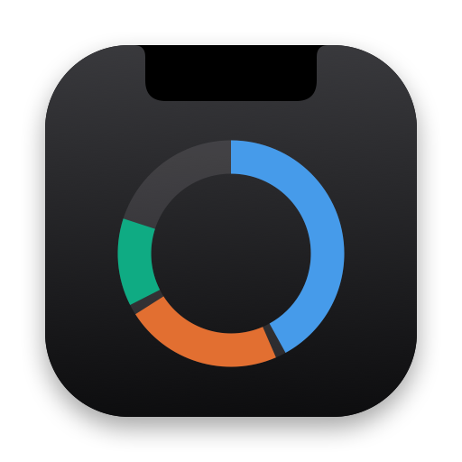

Storage Island
Disk space at a glance. A Mac utility by TECHNOBASE.
Privacy Policy
Effective 14 October 2026
Storage Island is a disk space utility for macOS published by TECHNOBASE.
Storage Island does not collect any data. It has no accounts, no analytics, no advertising and no crash reporting, and it makes no network connections.
Storage Island reads the names and sizes of files and folders on your Mac so it can show what is using your disk. This happens entirely on your Mac. Nothing is sent anywhere, and the results are kept only in memory while the app runs.
The app saves its settings, and the permission you give it to read your disk, in its own container on your Mac. Deleting the app removes them.
Files are only moved to the Trash or deleted when you ask the app to do so and confirm.
If you have questions about this policy, contact us on GitHub.